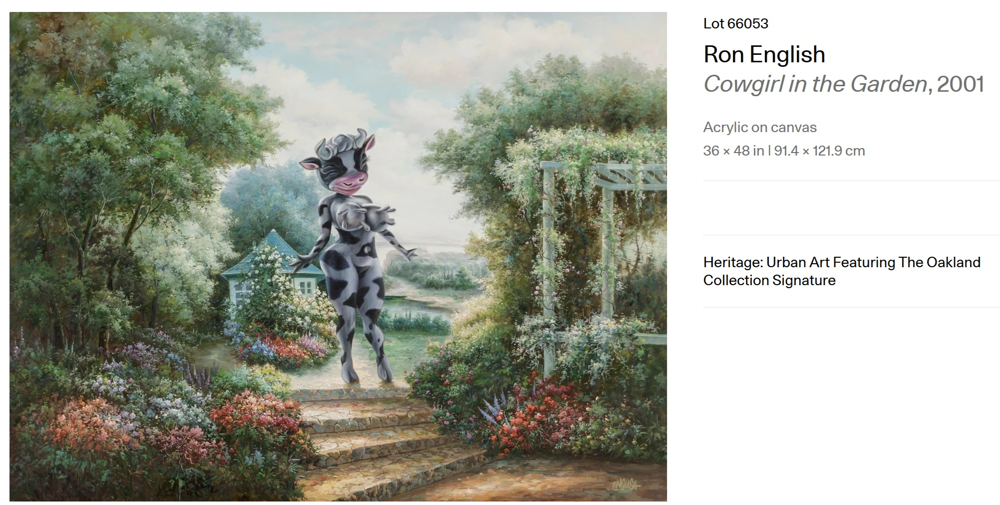
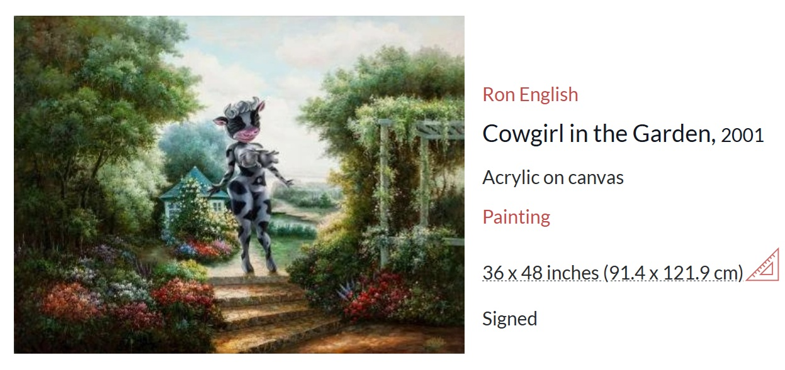
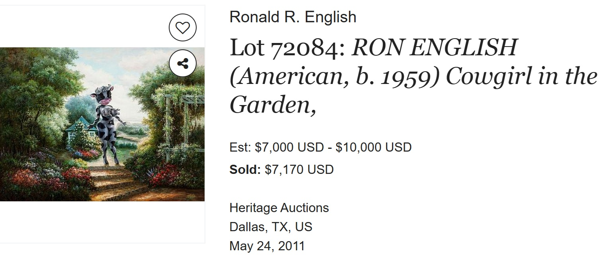
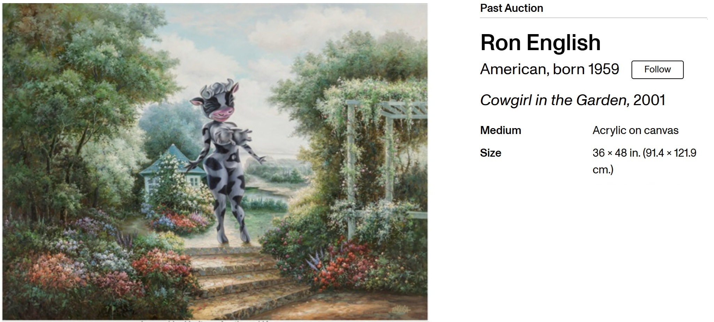

Literature
Ron English, Abject Expressionism: The Art of Ron English (San Francisco: Last Gasp, 2007), p. 12. ISBN 978-0867196894.
Notes
In Abject Expressionism, this work was erroneously reported as 36 × 42 inches.
The image of this work was reversed in Abject Expressionism.
Artsy and Invaluable describe the work as acrylic on canvas and list the dimensions as 36 × 48 inches; the catalogue metadata above follows the current catalogue record.
Artsy notes frame rubbing to the lower corners and tacking edge, with abrasion to the lower left, and records the framed dimensions as 43.75 × 55.75 inches.
Invaluable records the work as signed lower right and titled and signed on the reverse.
Ancillary Documentation
The following materials document online artwork-page and auction-record information connected to the work.



